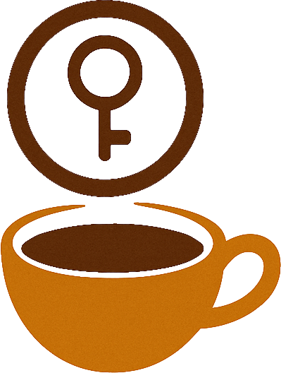

Café en Clave
Descubrí la melodía de sabores de cada taza
Participá en la Edición #1
¿Cómo funciona?
1.
Recibí tu kit
2.
Explorá cada taza
3.
Respondé el cuestionario
4.
Disfrutá el resto de tus cafés :)
Tu Álbum Cafetero
4 cafés especiales (80g cada uno)
Formulario de catación simplificado
Acceso al formulario de adivinanza
Acceso a resultados y premios
¿Por qué participar?
Conectá con cafés de pequeños productores de Costa Rica
Afiná tus sentidos como un catador
Jugá, aprendé y celebrá tu amor por el café
Forma parte de una comunidad de cafeteros
¿Listo para descubrir la clave de cada taza?
Reserva tu kit de Café en Clave